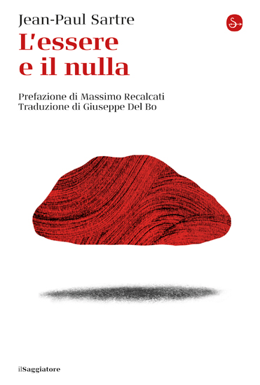

12:51 · 3 OPERE
Gli orrori vengono ormai celebrati come se questi fossero altro da ciò che sono.
Il filo del discorso
Un passo dei Fratelli Karamazov introduce il rapporto fra fondamento etico e possibilità di giustificare ogni azione. Dr Divago collega la perdita di questo riferimento alla trasformazione delle stragi in date impersonali e alla diversa attenzione riservata alle vittime. Su questa base sviluppa una polemica sulla rappresentazione del 7 ottobre, di Gaza e delle manifestazioni politiche. Le analogie con il fascismo e con altri eventi storici sostengono la conclusione sul compito della memoria e sull’indipendenza del giudizio.
I libri nel discorso

I fratelli Karamazov
Copertina: Newton Compton · I Mammut Gold · edizione di riferimento
Dostoevskij e il romanzo sono nominati prima della lettura del dialogo.
Passaggio 0:03 ↗ · Fonti e libro ↗
L’essere e il nulla
Copertina: il Saggiatore · La cultura · 2023
Copertina autentica dell’edizione di riferimento, non attribuita all’esemplare del video.
Sartre e L’essere e il nulla sono nominati nella ricostruzione della fortuna della formula; collocazione della citazione da verificare.
Passaggio 0:53 ↗ · Fonti e libro ↗
L’ideologia del lupo
Copertina: Presentazione dell’autore, 2024
Il relatore rinvia esplicitamente a L’ideologia del lupo per il tema della cancellazione dei volti delle vittime.
Passaggio 3:53 ↗ · Fonti e libro ↗